Prepared 27 October 2026 from commit ff3627f (3,534 catalogue schemes, 17 reviewed rules, rule bundle rules-2026.10.1).
The brief asks to run each scenario and capture the input, actual result and evidence, and explain any difference from the expected result. This folder does exactly that.
| Case | Scenario | Brief expects | Result | Checks | Page |
|---|---|---|---|---|---|
| TC1 | Eligible household | scheme list with rules quoted | ✅ PASS | 6/6 | #tc1 |
| TC2 | Same scheme name in two states | correct state used | ✅ PASS | 6/6 | #tc2 |
| TC3 | Age misheard | confirmed before filtering | ✅ PASS | 7/7 | #tc3 |
| TC4 | Provisional eligibility | never promised as a benefit | ✅ PASS | 7/7 | #tc4 |
| TC5 | Returning citizen | extra case | ✅ PASS | 8/8 | #tc5 |
34 of 34 checks pass across the five scenarios. A printable version with all screenshots is in Anvaya-test-evidence.pdf (same content as report.html).
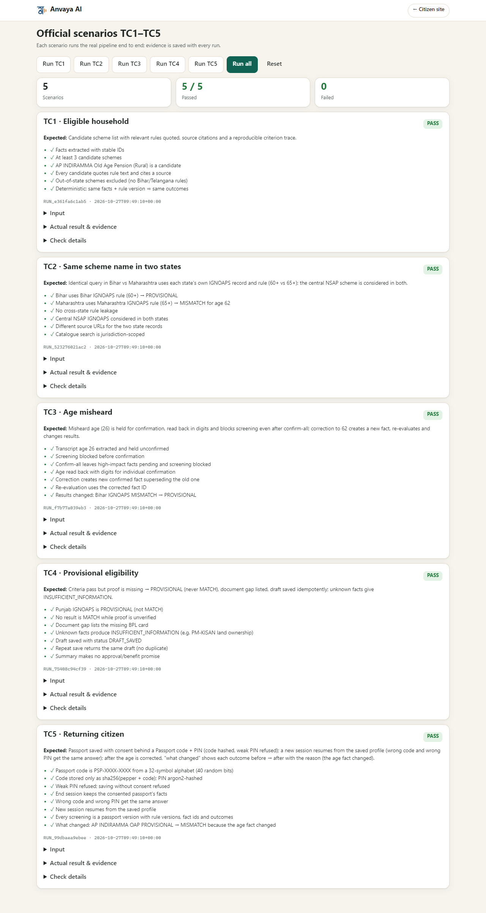
TC1: a household's facts become a scheme list; every condition quotes the official sentence and links its source. Results are provisional*, never "eligible".
* TC2: the same scheme name in Bihar and Maharashtra is screened against each state's own record (age 60+ vs 65+); nothing leaks across states, and the central scheme applies to both.
* TC3: a misheard age (26 instead of 62) is held, read back in digits, blocks screening, cannot be confirmed by "confirm all", and its correction recomputes the results.
* TC4: criteria pass but proof is missing, so the result is provisional, the document gap is listed, the draft is idempotent, and nothing is promised as a benefit.
* TC5 (extra): a returning citizen resumes with a Passport code + PIN and sees what changed and why.
| Case | Difference | Why |
|---|---|---|
| TC1 | Results say "Provisional match", never "Eligible" | Documents are unverified and the rule sources are not yet checked by a data steward; the safety rules forbid promising a benefit |
| TC1 | Only schemes with a reviewed rule are screened (17 of 3,534) | The engine does not guess at schemes nobody has reviewed |
| TC2 | The same person gets different answers in the two states | The two official records set different age limits (60 vs 65); the central scheme still applies in both |
| TC3 | The mishearing is simulated | A real recognition error cannot be triggered on demand; the test proves the system's handling of a wrong age |
| TC3 | "Confirm all" does not confirm the age, income or state | Stronger than the brief: high-impact facts are confirmed one by one |
| TC4 | none |
Each scenario is a function in backend/anvaya/testrunner.py that drives the real pipeline (conversation → extraction → confirmation → rule engine → documents → draft) and records its input, the expected result,
the actual result and a list of named checks. The screenshots are taken by a browser driving the real web app with the same inputs. The whole pack is generated by one script from the recorded data (no number in these pages is typed by hand):
backend/.venv/Scripts/python.exe -m pip install playwright # once; Chrome must be installed backend/.venv/Scripts/python.exe scripts/capture_test_evidence.py
It uses a throwaway database with no Supabase, no LLM and no speech service, so it is repeatable. The same scenarios can be run by an admin on the app's /test-runs page, and POST /api/v1/test-runs/TC1…TC5 returns the same record.
The automated test-suite also runs them (backend/tests/test_api.py).
#tc1 … #tc5 (one page per case) · report.html / Anvaya-test-evidence.pdf (printable) · data/TCn.json (raw records) · data/environment.json · screenshots/ · ../../scripts/capture_test_evidence.py (regenerates everything).
| Brief expects | scheme list with rules quoted |
|---|---|
| Result | ✅ PASS (6/6 checks) |
| Run | RUN_b880ebfef025 · 2026-10-27T09:49:06+00:00 · evaluation EVAL_47d3e36fcbc3 |
A citizen types (or says) in English:
I am 67 years old, a farmer in a village in Guntur, Andhra Pradesh. Family of 4, yearly income 60,000 rupees. We have a BPL card, I do not get any pension, I own 2 acres of land and have a bank account.
It extracted the household's facts with stable ids, confirmed them, and screened them against the reviewed rules. 4 candidate schemes came back,
every one with the official sentence for each condition quoted next to the citizen's fact, and the source link:
| Scheme | Condition | Needs | Citizen's fact | Result | Official wording (quoted) |
|---|---|---|---|---|---|
| INDIRAMMA Old Age Pension (Rural) | state | == Andhra Pradesh | Andhra Pradesh | PASS | “The applicant should be a local resident of the district.” |
| INDIRAMMA Old Age Pension (Rural) | bpl | yes | True | PASS | “The applicant should be from a Below Poverty Line (BPL) family.” |
| INDIRAMMA Old Age Pension (Rural) | area | == rural | rural | PASS | “The applicant should be from a rural area.” |
| INDIRAMMA Old Age Pension (Rural) | receives_other_pension | no | False | PASS | “The applicant should not be covered under any other Pension Scheme.” |
| INDIRAMMA Old Age Pension (Rural) | age | >= 65 | 67 | PASS | “The applicant should be 65 years of age or above in age.” |
| NSAP - Indira Gandhi National Old Age Pension Scheme | bpl | yes | True | PASS | “The applicant should belong to a Below Poverty Line (BPL) household.” |
| NSAP - Indira Gandhi National Old Age Pension Scheme | age | >= 60 | 67 | PASS | “The applicant should be 60 years of age or above.” |
(first two candidates shown; all 4 are in data/TC1.json.) Outcome of every rule screened: R_AP_INDIRAMMA_OAP_RURAL PROVISIONAL, R_NSAP_IGNOAPS PROVISIONAL, R_PM_KISAN PROVISIONAL, R_PMSBY PROVISIONAL, R_AP_INDIRAMMA_WIDOW_RURAL INSUFFICIENT_INFORMATION, R_IGNWPS INSUFFICIENT_INFORMATION, R_PMUY_2 INSUFFICIENT_INFORMATION, R_AP_SPECTACLES_SENIOR NEEDS_HUMAN_REVIEW, R_APY MISMATCH, R_AP_INDIRAMMA_OAP_URBAN MISMATCH, R_PMAY_URBAN MISMATCH, R_PMJJBY MISMATCH.
| # | Check | Result |
|---|---|---|
| 1 | Facts extracted with stable IDs | ✅ pass |
| 2 | At least 3 candidate schemes | ✅ pass |
| 3 | AP INDIRAMMA Old Age Pension (Rural) is a candidate | ✅ pass |
| 4 | Every candidate quotes rule text and cites a source | ✅ pass |
| 5 | Out-of-state schemes excluded (no Bihar/Telangana rules) | ✅ pass |
| 6 | Deterministic: same facts + rule version ⇒ same outcomes | ✅ pass |
Raw record: data/TC1.json · runner page:
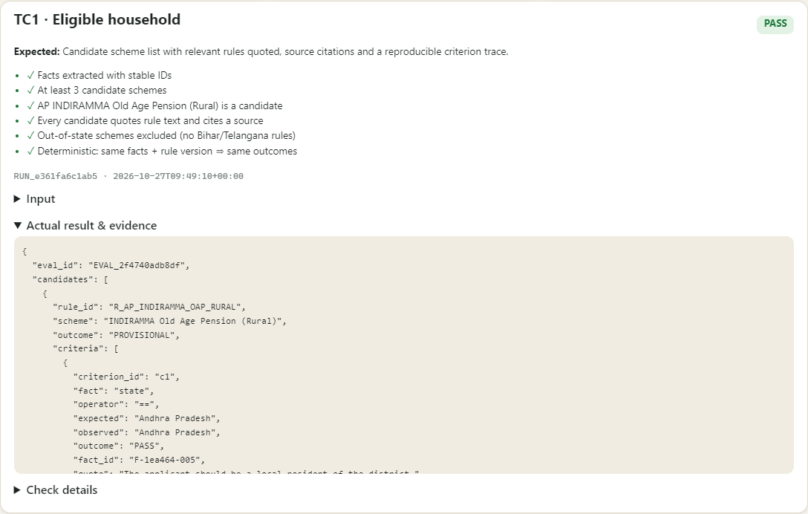
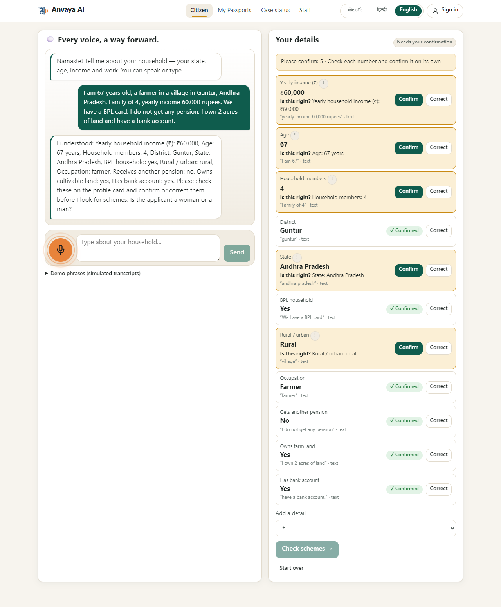
The conversation: what the citizen typed and the facts the bot understood (each must be confirmed)
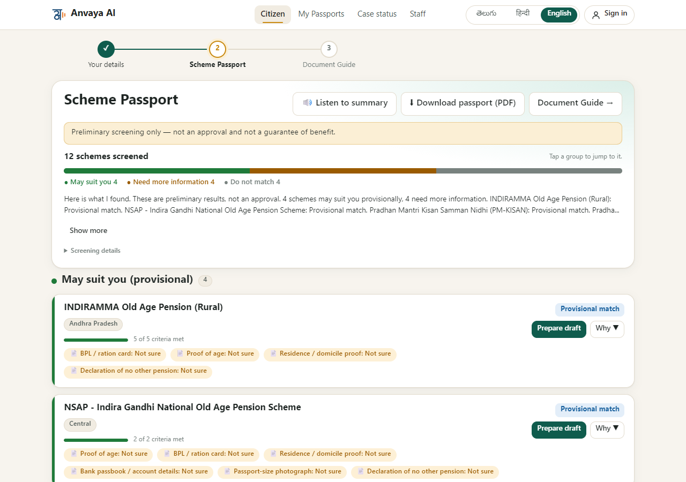
The Scheme Passport: 12 schemes screened, grouped; every likely scheme says "Provisional match"
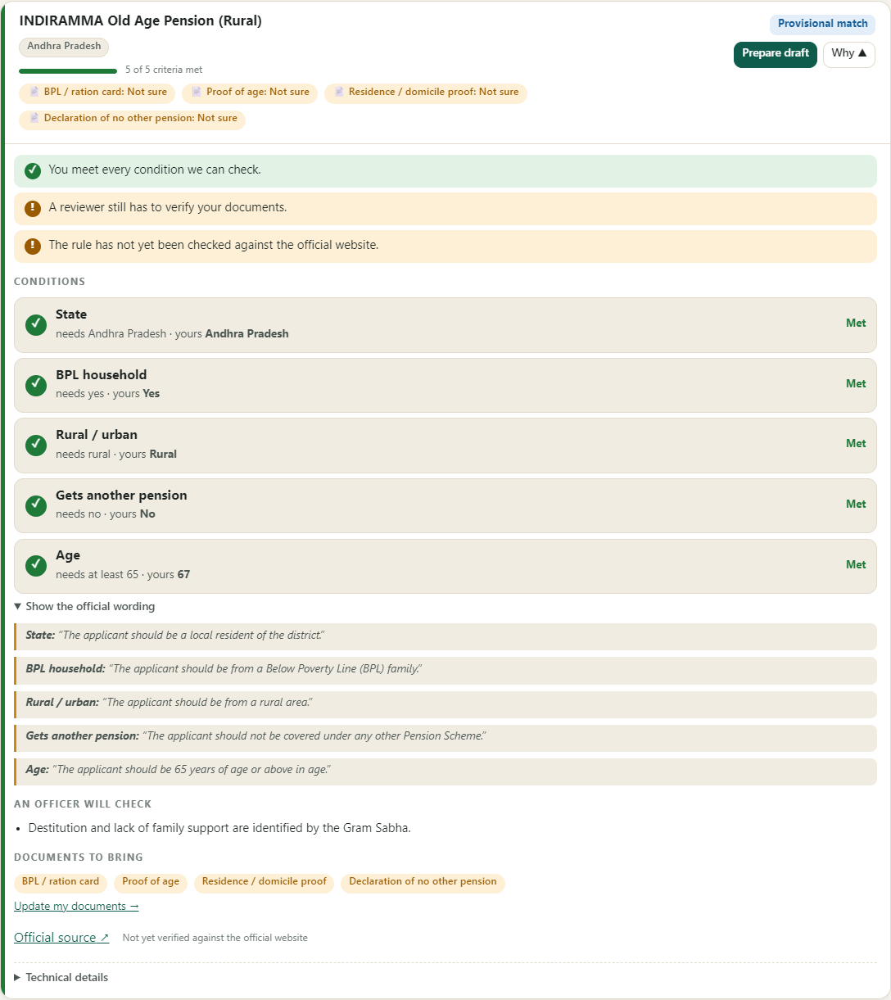
"Why this result": each condition, what the rule needs, what the citizen said, and the official wording quoted
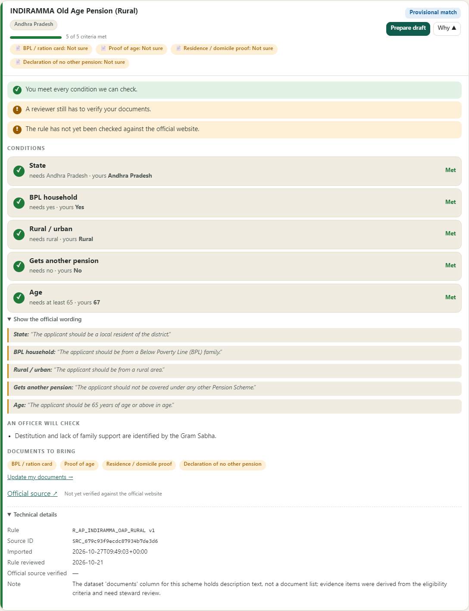
The official source link, and the technical details (rule id, source id, dates) folded below
Matches the brief: a scheme list, with each rule's own wording quoted and a source cited. Three things worth saying out loud:
1. The label is "Provisional match", never "Eligible". All 4 candidates are provisional because their required documents are not yet verified by a reviewer and each rule's source has not been verified against the official website by a data steward. This is deliberate (see TC4). The scenario's name ("Eligible household") describes the household, not a promise the system makes.
2. Only schemes with a reviewed rule can be screened. The catalogue holds 3,534 schemes and can be searched, but the screening engine evaluates the 17 rules that have been written and reviewed; the rest are not guessed at.
3. The input is typed text. The speech path is exercised in TC3 with a simulated transcript; real microphone accuracy depends on the speech service and is not something this test can promise.
| Brief expects | correct state used |
|---|---|
| Result | ✅ PASS (6/6 checks) |
| Run | RUN_b7154565b16e · 2026-10-27T09:49:06+00:00 |
The same sentence twice, once per state:
I am 62 years old, BPL household, I do not get any pension. I live in {state}. with {state} = Bihar, then Maharashtra.
"Indira Gandhi National Old Age Pension Scheme" exists in both states' records with different rules and different official sources. Each citizen was screened against their own state's record:
| Rule | Scheme record | Outcome | Age condition |
|---|---|---|---|
| R_IGNOAPS_BIHAR | Indira Gandhi National Old Age Pension Scheme- Bihar | PROVISIONAL | age >= 60 (citizen: 62) → PASS |
| R_NSAP_IGNOAPS | NSAP - Indira Gandhi National Old Age Pension Scheme | PROVISIONAL | age >= 60 (citizen: 62) → PASS |
| R_NSAP_IGNOAPS | NSAP - Indira Gandhi National Old Age Pension Scheme | PROVISIONAL | age >= 60 (citizen: 62) → PASS |
| R_IGNOAPS_MAHARASHTRA | Indira Gandhi National Old Age Pension Scheme (Maharashtra) | MISMATCH | age >= 65 (citizen: 62) → FAIL |
* Bihar's record needs age ≥ 60 → a 62-year-old passes. Maharashtra's needs ≥ 65 → the same 62-year-old does not match the state scheme.
* The central scheme (R_NSAP_IGNOAPS, age ≥ 60) is considered for both citizens: Bihar → PROVISIONAL, Maharashtra → PROVISIONAL.
* No rule from the other state leaked in; the two state records cite different source documents.
| # | Check | Result |
|---|---|---|
| 1 | Bihar uses Bihar IGNOAPS rule (60+) → PROVISIONAL | ✅ pass |
| 2 | Maharashtra uses Maharashtra IGNOAPS rule (65+) → MISMATCH for age 62 | ✅ pass |
| 3 | No cross-state rule leakage | ✅ pass |
| 4 | Central NSAP IGNOAPS considered in both states | ✅ pass |
| 5 | Different source URLs for the two state records | ✅ pass |
| 6 | Catalogue search is jurisdiction-scoped | ✅ pass |
Raw record: data/TC2.json · runner page:
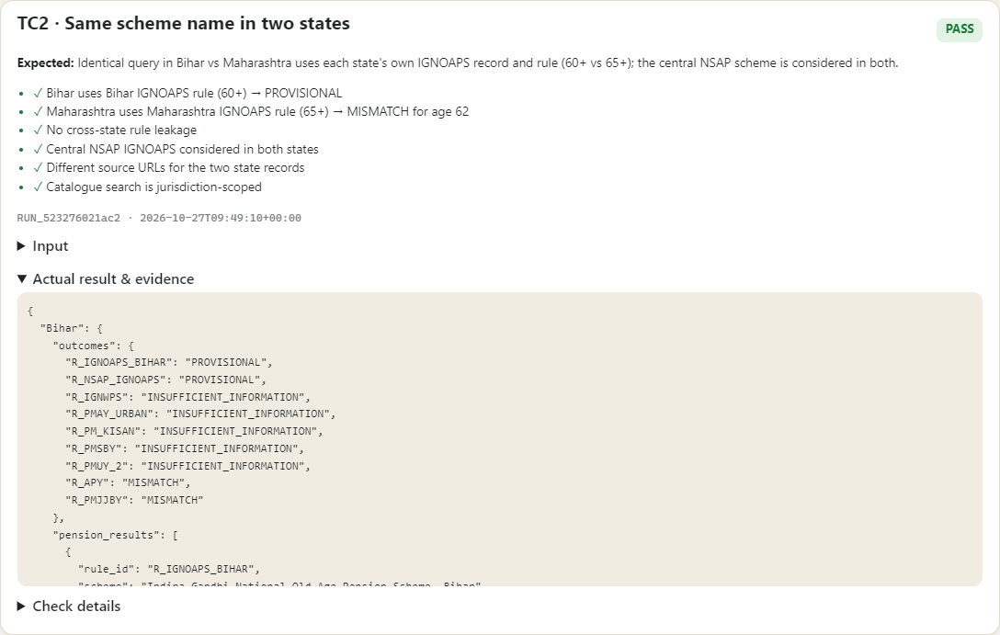
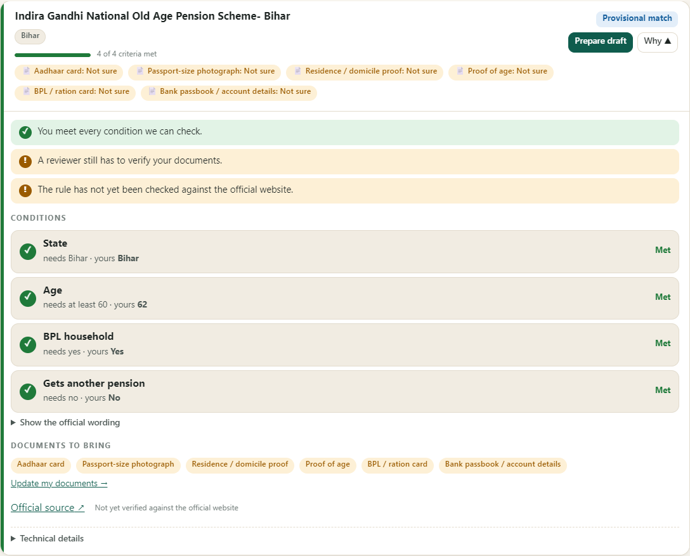
Bihar: the Bihar record is used (age ≥ 60) and the condition is met
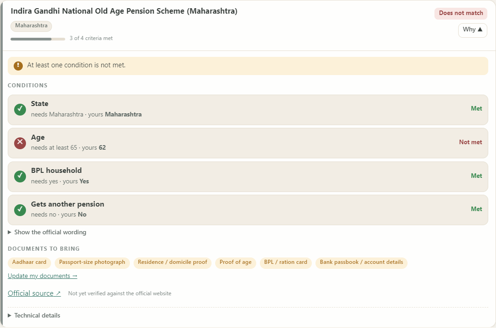
Maharashtra: the Maharashtra record is used (age ≥ 65) and the age condition is not met for a 62-year-old
Matches the brief: the correct state's record is used in each case. One thing to know: the same person gets a different answer in the two states (provisional in Bihar, "does not match" for Maharashtra's state scheme) because the two official records really do set different age limits (60 vs 65); the central NSAP scheme still shows as a provisional match in Maharashtra, so the citizen is not left with nothing. The thresholds come from the scheme text in the dataset, quoted in the "Why this result" panel.
| Brief expects | confirmed before filtering |
|---|---|
| Result | ✅ PASS (7/7 checks) |
| Run | RUN_88d324a85d48 · 2026-10-27T09:49:06+00:00 |
A Hindi voice transcript in which the speaker's age arrives as 26 (the real age is 62):
मेरी उम्र 26 साल है। मैं बिहार में रहता हूँ। बीपीएल कार्ड है, कोई पेंशन नहीं मिलती। सालाना आय 40000 रुपये।
1. Read the transcript, held the age (and income, state) as unconfirmed and read the age back in digits: “उम्र: 26 वर्ष”.
2. Blocked screening with PROFILE_NEEDS_CONFIRMATION until those facts are confirmed.
3. "Confirm all" did not confirm the high-impact facts; it confirmed only 1 low-impact fact and left 3 (age, income, state) for individual confirmation.
4. The citizen corrected the age to 62: a new fact was created and the old one marked superseded (F-e6bf5e-007); the results were recomputed from the corrected fact:
| Rule | With the misheard age (26) | After the correction (62) |
|---|---|---|
R_IGNOAPS_BIHAR | MISMATCH | PROVISIONAL |
R_NSAP_IGNOAPS | MISMATCH | PROVISIONAL |
R_IGNWPS | MISMATCH | INSUFFICIENT_INFORMATION |
R_APY | INSUFFICIENT_INFORMATION | MISMATCH |
R_PMJJBY | INSUFFICIENT_INFORMATION | MISMATCH |
| # | Check | Result |
|---|---|---|
| 1 | Transcript age 26 extracted and held unconfirmed | ✅ pass |
| 2 | Screening blocked before confirmation | ✅ pass |
| 3 | Confirm-all leaves high-impact facts pending and screening blocked | ✅ pass |
| 4 | Age read back with digits for individual confirmation | ✅ pass |
| 5 | Correction creates new confirmed fact superseding the old one | ✅ pass |
| 6 | Re-evaluation uses the corrected fact ID | ✅ pass |
| 7 | Results changed: Bihar IGNOAPS MISMATCH → PROVISIONAL | ✅ pass |
Raw record: data/TC3.json (includes the full fact history) · runner page:
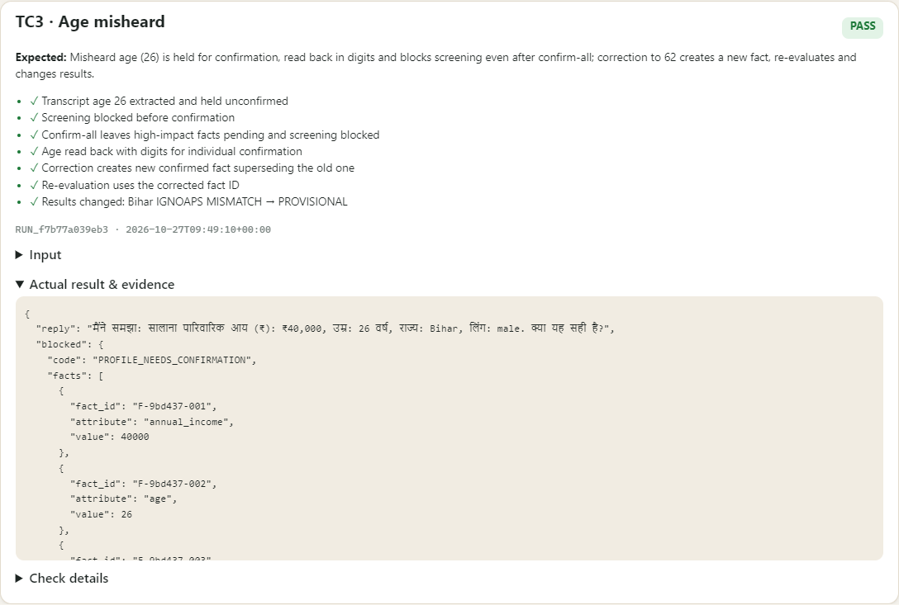
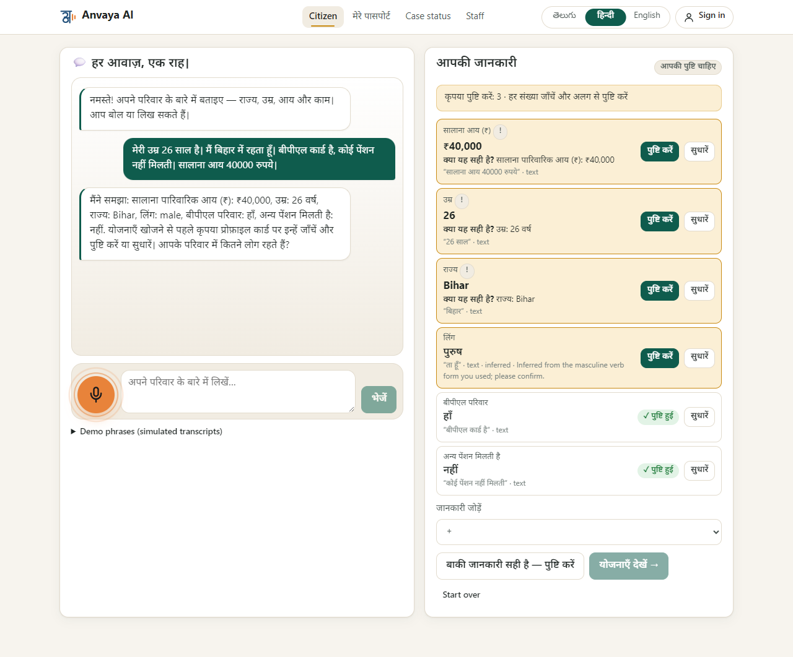
The misheard age is held for confirmation and read back; nothing is used yet
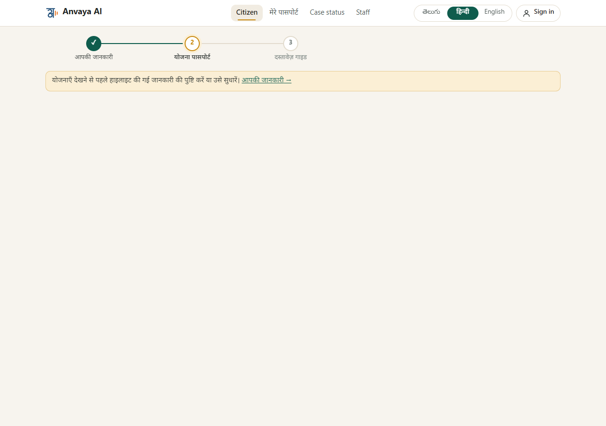
Trying to check schemes now is refused: "confirm or correct the highlighted details first"
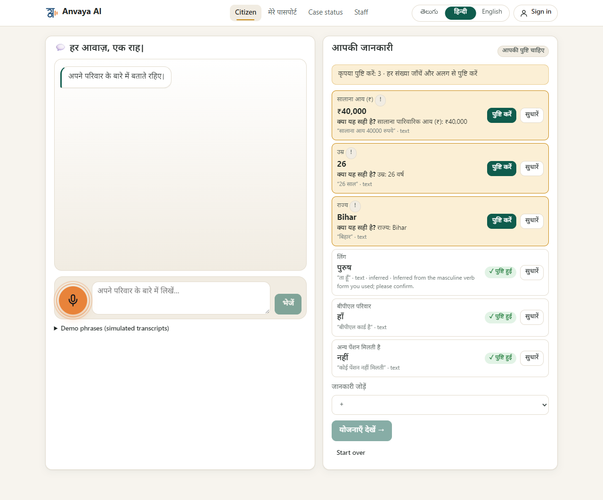
"Confirm the others" leaves the age (and income, state) pending: they must be confirmed one by one
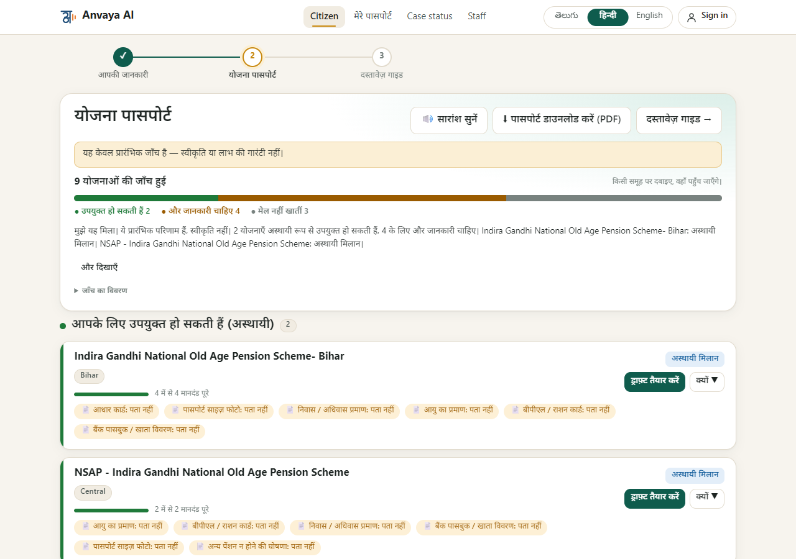
After the age is corrected to 62 the results are recomputed: the Bihar pension schemes become provisional matches
Matches the brief and goes a step further: facts are confirmed before any filtering, and "confirm all" cannot confirm the high-impact ones. Two honest notes:
1. The mishearing is simulated. The test injects a transcript that already contains the wrong age (channel "voice (simulated transcript)"), because a real speech-recognition error cannot be made to happen on demand. What the test proves is what the system does when it receives a wrong age.
2. The bot also guessed the speaker's gender (male) from the verb form "रहता हूँ"; that guess is marked inferred and also waits for confirmation, so it cannot filter anything unconfirmed.
| Brief expects | never promised as a benefit |
|---|---|
| Result | ✅ PASS (7/7 checks) |
| Run | RUN_f870179f61ec · 2026-10-27T09:49:06+00:00 |
I am 70 years old and live in Punjab. We have a BPL card. I do not get any pension.
Document marks entered by the citizen: bpl_card = missing, age_proof = unknown, residence_proof = available.
| Scheme | Condition | Needs | Citizen's fact | Result | Official wording (quoted) |
|---|---|---|---|---|---|
| Indira Gandhi National Old Age Pension Scheme (Punjab) | state | == Punjab | Punjab | PASS | “The applicant should be a resident of Punjab.” |
| Indira Gandhi National Old Age Pension Scheme (Punjab) | age | >= 60 | 70 | PASS | “The applicant should be 60 years of age or older.” |
| Indira Gandhi National Old Age Pension Scheme (Punjab) | bpl | yes | True | PASS | “The applicant should be from a Below Poverty Line (BPL) family.” |
| Indira Gandhi National Old Age Pension Scheme (Punjab) | receives_other_pension | no | False | PASS | “The applicant should not be receiving pension benefits under any social security scheme.” |
Every condition passes, but the required documents are not verified by a reviewer, so the outcome is PROVISIONAL, never MATCH:
decision reasons CRITERIA_PASSED, EVIDENCE_NOT_VERIFIED, SOURCE_NOT_VERIFIED. The document gap lists age_proof, bpl_card, bank_passbook.
Rules whose facts are still unknown (e.g. PM-KISAN needs land ownership) answer INSUFFICIENT_INFORMATION instead of guessing. A draft was saved (DRF_0508af246c32) and saving again returned the same draft (no duplicate).
The spoken summary, word for word: “Here is what I found. These are preliminary results, not an approval. 2 schemes may suit you provisionally, 5 need more information. Indira Gandhi National Old Age Pension Scheme (Punjab): Provisional match. NSAP - Indira Gandhi N…”
| # | Check | Result |
|---|---|---|
| 1 | Punjab IGNOAPS is PROVISIONAL (not MATCH) | ✅ pass |
| 2 | No result is MATCH while proof is unverified | ✅ pass |
| 3 | Document gap lists the missing BPL card | ✅ pass |
| 4 | Unknown facts produce INSUFFICIENT_INFORMATION (e.g. PM-KISAN land ownership) | ✅ pass |
| 5 | Draft saved with status DRAFT_SAVED | ✅ pass |
| 6 | Repeat save returns the same draft (no duplicate) | ✅ pass |
| 7 | Summary makes no approval/benefit promise | ✅ pass |
Raw record: data/TC4.json · runner page:
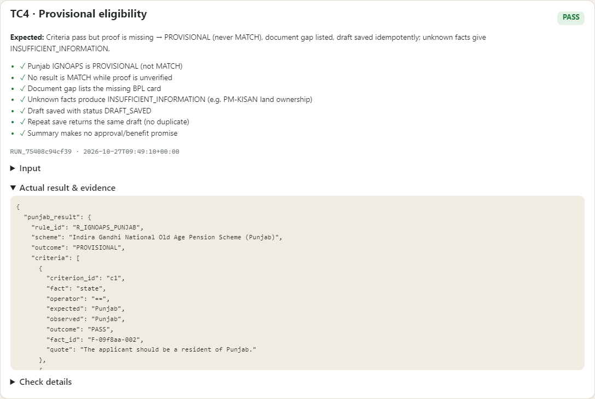
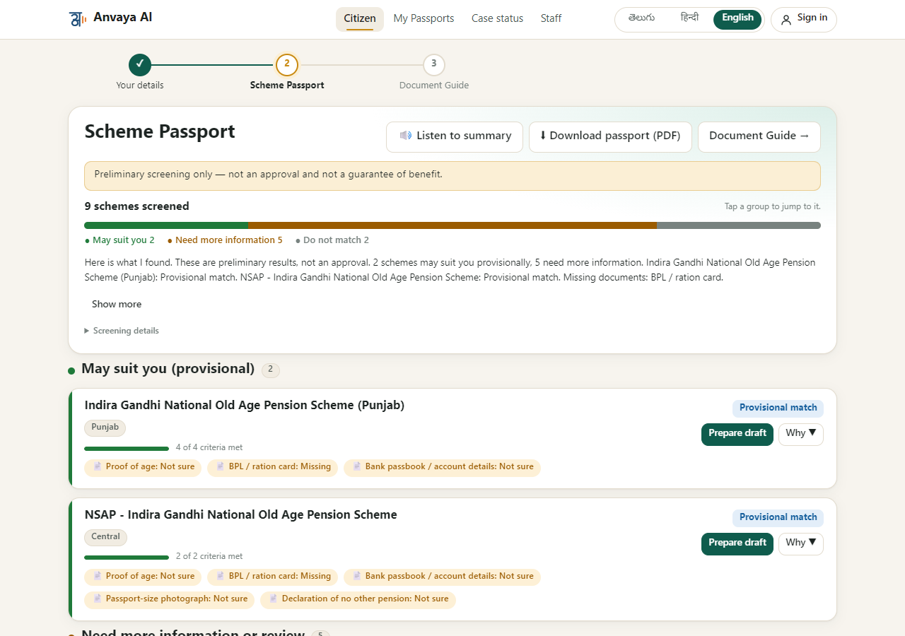
The Punjab pension is a "Provisional match"; the notice says it is not an approval and not a guarantee of benefit
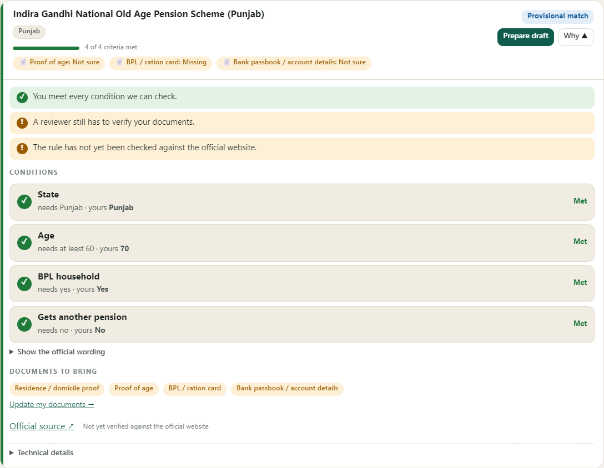
"Why this result": every condition met, but "A reviewer still has to verify your documents"; the documents to bring are listed
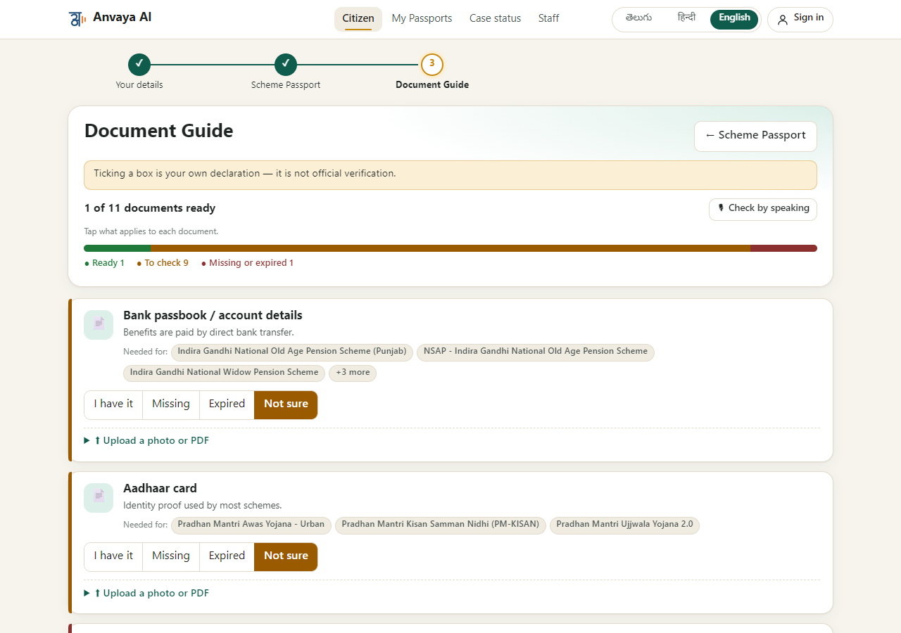
The Document Guide shows the gap: the BPL card is marked missing
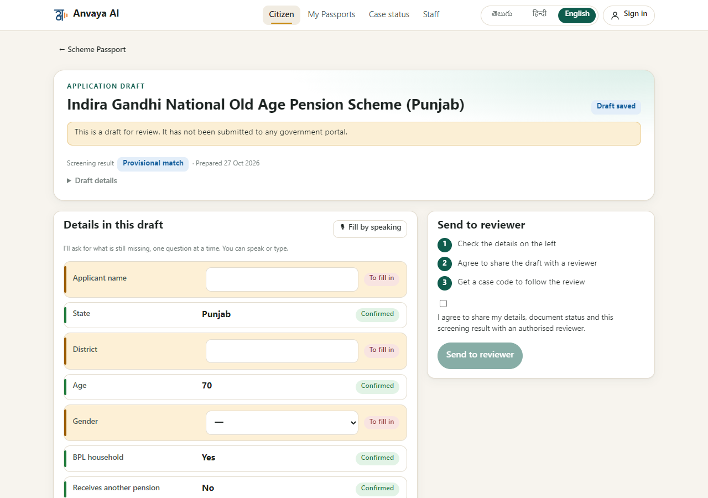
The draft is saved and clearly marked "not submitted to any government portal"
None. The system never presents a result as a benefit: the only positive outcome is "Provisional match", the words "approval" and "guarantee" appear only to deny them ("Preliminary screening only — not an approval and not a guarantee of benefit"), and an automated check scans the spoken summary for promise wording. Every outcome here depends on documents a human reviewer would still have to verify.
| Result | ✅ PASS (8/8 checks) |
|---|---|
| Run | RUN_54472765af36 · 2026-10-27T09:49:07+00:00 |
The brief lists four cases; this fifth one covers the saved-passport journey (Passport code + PIN, resume, "what changed"). Passport saved with consent behind a Passport code + PIN (code hashed, weak PIN refused); a new session resumes from the saved profile (wrong code and wrong PIN get the same answer); after the age is corrected, "what changed" shows each outcome before → after with the reason (the age fact changed).
| # | Check | Result |
|---|---|---|
| 1 | Passport code is PSP-XXXX-XXXX from a 32-symbol alphabet (40 random bits) | ✅ pass |
| 2 | Code stored only as sha256(pepper + code); PIN argon2-hashed | ✅ pass |
| 3 | Weak PIN refused; saving without consent refused | ✅ pass |
| 4 | End session keeps the consented passport's facts | ✅ pass |
| 5 | Wrong code and wrong PIN get the same answer | ✅ pass |
| 6 | New session resumes from the saved profile | ✅ pass |
| 7 | Every screening is a passport version with rule versions, fact ids and outcomes | ✅ pass |
| 8 | What changed: AP INDIRAMMA OAP PROVISIONAL → MISMATCH because the age fact changed | ✅ pass |
"What changed" after the age was corrected to 52:
| Scheme | Before | After | Because |
|---|---|---|---|
| NSAP - Indira Gandhi National Old Age Pension Scheme | PROVISIONAL | MISMATCH | the age changed (67 → 52) |
| Sanctioning Spectacles to Senior Citizens | NEEDS_HUMAN_REVIEW | MISMATCH | the age changed (67 → 52) |
| INDIRAMMA Old Age Pension (Rural) | PROVISIONAL | MISMATCH | the age changed (67 → 52) |
Raw record: data/TC5.json · runner page:
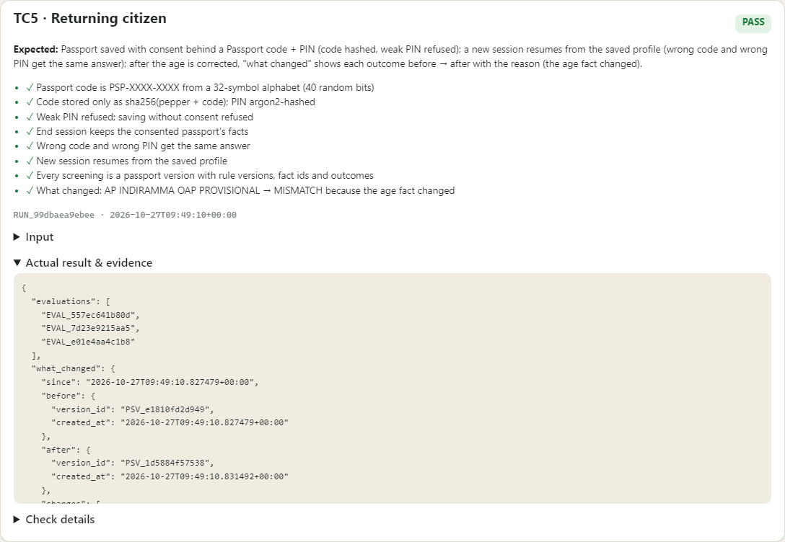
None. The PIN is never recorded in the evidence (the input shows "(4 digits, not recorded)"), and a wrong code and a wrong PIN deliberately get the same answer.